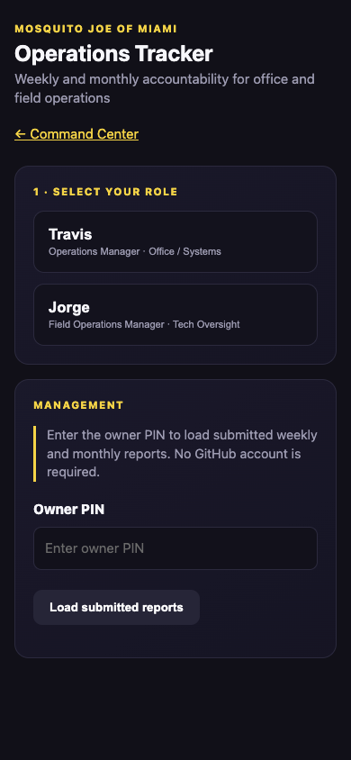
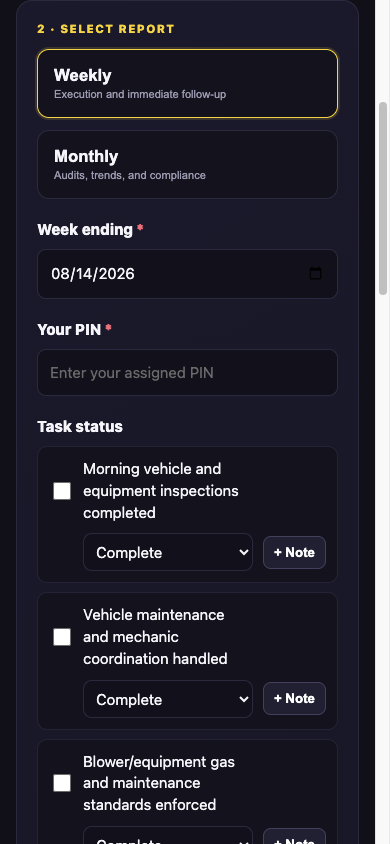
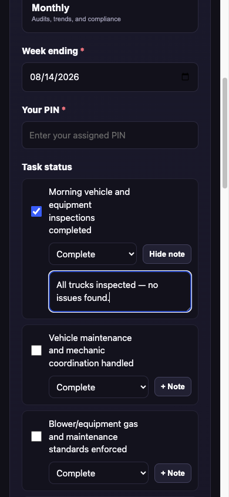

Mosquito Joe of Miami
Operations Tracker
A quick guide for completing weekly and monthly reports—without GitHub or Cloudflare logins.
You only need your assigned PIN and about 5 minutes.
A quick guide for completing weekly and monthly reports—without GitHub or Cloudflare logins.



Confirm the period-ending date, enter your assigned PIN, and tap Submit report.
At the bottom, enter the owner PIN and tap Load submitted reports. Open any report to see task completion, notes, wins, issues, priorities, and safety items.
Use the tracker every reporting period so operations history stays centralized and actionable.